STA314F19
Michal Malyska
Preliminaries and R setup
library(tidyverse)## ── Attaching packages ──────────────────────────────────────────────────────────────────────── tidyverse 1.2.1 ──## ✔ ggplot2 3.2.0 ✔ purrr 0.3.2
## ✔ tibble 2.1.3 ✔ dplyr 0.8.3
## ✔ tidyr 0.8.3 ✔ stringr 1.4.0
## ✔ readr 1.3.1 ✔ forcats 0.4.0## ── Conflicts ─────────────────────────────────────────────────────────────────────────── tidyverse_conflicts() ──
## ✖ dplyr::filter() masks stats::filter()
## ✖ dplyr::lag() masks stats::lag()library(MASS)##
## Attaching package: 'MASS'## The following object is masked from 'package:dplyr':
##
## selectlibrary(ISLR)R Setup
If you need help setting up R and Rstudio, I host a guide on my resources page
Loading Data
You can find a fully commented guide on how to load in tabular data using the faster, tidyverse function read_csv() here
Tutorial 1
Tutorial 2
Tutorial 3
Lab
data_orig <- MASS::Boston
df <- as_tibble(data_orig)
df_train <- df %>% sample_n(size = length(df$chas) * 0.7)
df_test <- setdiff(df, df_train)Let’s start by showing off what bad practice is and fit a linear model without doing any kind of previous work:
model1 <- lm(medv ~ lstat, data = df_train)
summary(model1)##
## Call:
## lm(formula = medv ~ lstat, data = df_train)
##
## Residuals:
## Min 1Q Median 3Q Max
## -15.478 -4.264 -1.492 2.266 24.180
##
## Coefficients:
## Estimate Std. Error t value Pr(>|t|)
## (Intercept) 34.8172 0.6978 49.90 <2e-16 ***
## lstat -0.9441 0.0477 -19.79 <2e-16 ***
## ---
## Signif. codes: 0 '***' 0.001 '**' 0.01 '*' 0.05 '.' 0.1 ' ' 1
##
## Residual standard error: 6.55 on 352 degrees of freedom
## Multiple R-squared: 0.5268, Adjusted R-squared: 0.5254
## F-statistic: 391.8 on 1 and 352 DF, p-value: < 2.2e-16plot(model1)


Assumptions are not satisfied!
ggplot(data = df, aes(x = medv, y = ..density..)) +
geom_density() +
geom_histogram(bins = 75, alpha = 0.3, fill = "red") +
theme_minimal()
ggplot(data = df, aes(sample = medv)) +
geom_qq() +
geom_qq_line() +
theme_minimal()
ggplot(data = df, aes(y = medv, x = lstat)) +
geom_point() +
geom_smooth(method = "lm", color = "red") +
geom_smooth(method = "gam", formula = y ~ s(x, bs = "cs"), color = "green") +
geom_smooth(method = "lm", formula = y ~ x + I(x^2), color = "blue") +
theme_minimal()
How to make predictions:
df_test$predictions <- predict(model1, newdata = df_test)How to add multiple variables as predictors:
model2 <- lm(data = df_train, formula = medv ~ lstat + age)
summary(model2)##
## Call:
## lm(formula = medv ~ lstat + age, data = df_train)
##
## Residuals:
## Min 1Q Median 3Q Max
## -16.270 -4.282 -1.484 2.660 22.865
##
## Coefficients:
## Estimate Std. Error t value Pr(>|t|)
## (Intercept) 33.48517 0.91463 36.611 <2e-16 ***
## lstat -1.02161 0.05875 -17.388 <2e-16 ***
## age 0.03386 0.01515 2.235 0.026 *
## ---
## Signif. codes: 0 '***' 0.001 '**' 0.01 '*' 0.05 '.' 0.1 ' ' 1
##
## Residual standard error: 6.513 on 351 degrees of freedom
## Multiple R-squared: 0.5334, Adjusted R-squared: 0.5307
## F-statistic: 200.6 on 2 and 351 DF, p-value: < 2.2e-16plot(model2)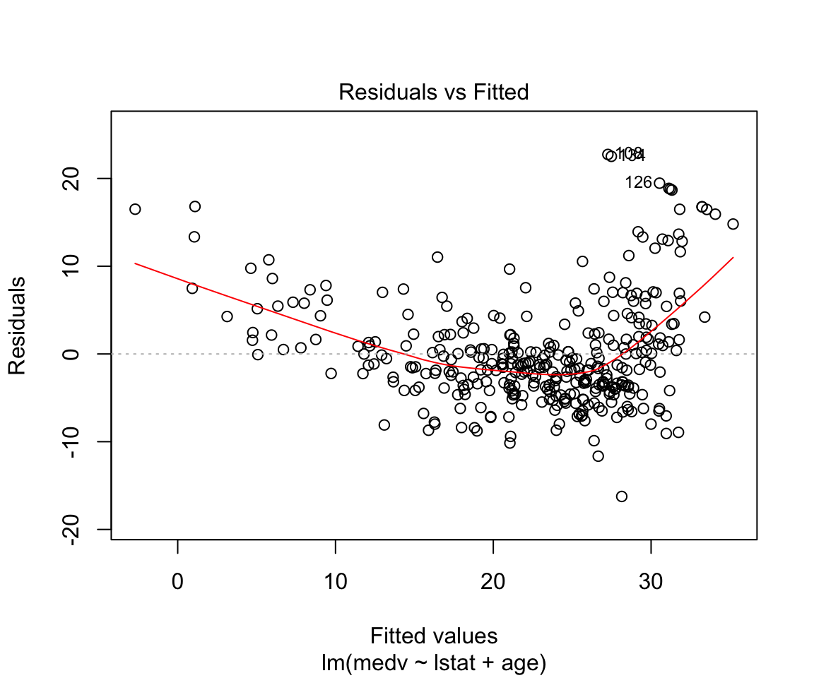


How to add everything (and subtract some) variables:
model3 <- lm(data = df_train, formula = medv ~ . -age -indus)
summary(model3)##
## Call:
## lm(formula = medv ~ . - age - indus, data = df_train)
##
## Residuals:
## Min 1Q Median 3Q Max
## -11.3489 -3.0458 -0.6117 2.0301 25.4191
##
## Coefficients:
## Estimate Std. Error t value Pr(>|t|)
## (Intercept) 33.894182 6.330942 5.354 1.58e-07 ***
## crim -0.141533 0.036919 -3.834 0.000150 ***
## zn 0.049012 0.016217 3.022 0.002699 **
## chas 3.838400 1.064806 3.605 0.000359 ***
## nox -19.492956 4.337231 -4.494 9.56e-06 ***
## rm 4.093314 0.518198 7.899 3.87e-14 ***
## dis -1.617703 0.223072 -7.252 2.77e-12 ***
## rad 0.305310 0.074606 4.092 5.33e-05 ***
## tax -0.009415 0.003915 -2.405 0.016697 *
## ptratio -0.854389 0.161702 -5.284 2.26e-07 ***
## black 0.009051 0.003373 2.684 0.007636 **
## lstat -0.523129 0.056640 -9.236 < 2e-16 ***
## ---
## Signif. codes: 0 '***' 0.001 '**' 0.01 '*' 0.05 '.' 0.1 ' ' 1
##
## Residual standard error: 5.007 on 342 degrees of freedom
## Multiple R-squared: 0.7314, Adjusted R-squared: 0.7227
## F-statistic: 84.64 on 11 and 342 DF, p-value: < 2.2e-16How to add interactions:
model4 <- lm(data = df_train, formula = medv ~ . -age -indus + lstat:ptratio )
summary(model4)##
## Call:
## lm(formula = medv ~ . - age - indus + lstat:ptratio, data = df_train)
##
## Residuals:
## Min 1Q Median 3Q Max
## -11.3495 -3.0458 -0.6146 2.0275 25.4242
##
## Coefficients:
## Estimate Std. Error t value Pr(>|t|)
## (Intercept) 3.397e+01 7.673e+00 4.428 1.28e-05 ***
## crim -1.416e-01 3.703e-02 -3.823 0.000156 ***
## zn 4.895e-02 1.658e-02 2.952 0.003378 **
## chas 3.839e+00 1.067e+00 3.599 0.000367 ***
## nox -1.946e+01 4.671e+00 -4.166 3.93e-05 ***
## rm 4.091e+00 5.336e-01 7.667 1.86e-13 ***
## dis -1.616e+00 2.330e-01 -6.937 2.03e-11 ***
## rad 3.053e-01 7.472e-02 4.086 5.47e-05 ***
## tax -9.428e-03 3.981e-03 -2.368 0.018436 *
## ptratio -8.588e-01 2.883e-01 -2.979 0.003099 **
## black 9.054e-03 3.381e-03 2.678 0.007760 **
## lstat -5.306e-01 4.039e-01 -1.313 0.189907
## ptratio:lstat 3.883e-04 2.087e-02 0.019 0.985170
## ---
## Signif. codes: 0 '***' 0.001 '**' 0.01 '*' 0.05 '.' 0.1 ' ' 1
##
## Residual standard error: 5.014 on 341 degrees of freedom
## Multiple R-squared: 0.7314, Adjusted R-squared: 0.7219
## F-statistic: 77.36 on 12 and 341 DF, p-value: < 2.2e-16How to write high level interactions:
model5 <- lm(data = df_train, formula = medv ~ lstat*ptratio*black)
summary(model5)##
## Call:
## lm(formula = medv ~ lstat * ptratio * black, data = df_train)
##
## Residuals:
## Min 1Q Median 3Q Max
## -13.1307 -3.9053 -0.9233 1.7941 27.1501
##
## Coefficients:
## Estimate Std. Error t value Pr(>|t|)
## (Intercept) -2.814e+01 5.108e+01 -0.551 0.5820
## lstat 2.176e+00 2.950e+00 0.738 0.4613
## ptratio 2.287e+00 2.584e+00 0.885 0.3766
## black 2.515e-01 1.341e-01 1.875 0.0616 .
## lstat:ptratio -1.191e-01 1.483e-01 -0.803 0.4223
## lstat:black -1.130e-02 7.822e-03 -1.444 0.1495
## ptratio:black -1.090e-02 6.798e-03 -1.603 0.1098
## lstat:ptratio:black 4.956e-04 3.940e-04 1.258 0.2093
## ---
## Signif. codes: 0 '***' 0.001 '**' 0.01 '*' 0.05 '.' 0.1 ' ' 1
##
## Residual standard error: 6.019 on 346 degrees of freedom
## Multiple R-squared: 0.6071, Adjusted R-squared: 0.5992
## F-statistic: 76.39 on 7 and 346 DF, p-value: < 2.2e-16This is what our data looks like:
ggplot(data = df_train, aes(x = lstat, y = medv)) +
geom_point() +
theme_minimal()
How to add a funciton of a variable as a predictor and how to make simple visualizations without adding predictions:
model6 <- lm(data = df_train, formula = medv ~ lstat + I(lstat^2))
summary(model6)##
## Call:
## lm(formula = medv ~ lstat + I(lstat^2), data = df_train)
##
## Residuals:
## Min 1Q Median 3Q Max
## -15.6090 -4.2046 -0.3744 2.6421 25.2400
##
## Coefficients:
## Estimate Std. Error t value Pr(>|t|)
## (Intercept) 44.298144 1.056174 41.94 <2e-16 ***
## lstat -2.514702 0.149400 -16.83 <2e-16 ***
## I(lstat^2) 0.048744 0.004456 10.94 <2e-16 ***
## ---
## Signif. codes: 0 '***' 0.001 '**' 0.01 '*' 0.05 '.' 0.1 ' ' 1
##
## Residual standard error: 5.665 on 351 degrees of freedom
## Multiple R-squared: 0.6471, Adjusted R-squared: 0.6451
## F-statistic: 321.8 on 2 and 351 DF, p-value: < 2.2e-16ggplot(data = df_train, aes(x = lstat, y = medv)) +
geom_point() +
geom_smooth(method = "lm", formula = y ~ x + I(x^2)) +
theme_minimal()
How to fit higher degree polynomials and visualize them:
model7 <- lm(data = df_train, formula = medv ~ poly(lstat, degree = 5))
summary(model7)##
## Call:
## lm(formula = medv ~ poly(lstat, degree = 5), data = df_train)
##
## Residuals:
## Min 1Q Median 3Q Max
## -14.4738 -3.1575 -0.5226 2.3261 27.0463
##
## Coefficients:
## Estimate Std. Error t value Pr(>|t|)
## (Intercept) 22.8469 0.2824 80.912 < 2e-16 ***
## poly(lstat, degree = 5)1 -129.6530 5.3127 -24.404 < 2e-16 ***
## poly(lstat, degree = 5)2 61.9586 5.3127 11.662 < 2e-16 ***
## poly(lstat, degree = 5)3 -25.1276 5.3127 -4.730 3.27e-06 ***
## poly(lstat, degree = 5)4 23.5874 5.3127 4.440 1.21e-05 ***
## poly(lstat, degree = 5)5 -15.8957 5.3127 -2.992 0.00297 **
## ---
## Signif. codes: 0 '***' 0.001 '**' 0.01 '*' 0.05 '.' 0.1 ' ' 1
##
## Residual standard error: 5.313 on 348 degrees of freedom
## Multiple R-squared: 0.6922, Adjusted R-squared: 0.6878
## F-statistic: 156.5 on 5 and 348 DF, p-value: < 2.2e-16ggplot(data = df_train, aes(x = lstat, y = medv)) +
geom_point() +
geom_smooth(method = "lm", formula = y ~ poly(x, degree = 5)) +
theme_minimal()
How to change plotting settings in base R (For tidyverse you should use gridExtra)
par(mfrow = c(2,2))
plot(model6)
Fitting character variables:
df2 <- ISLR::Carseats
df2_train <- sample_n(df2, size = length(df2$Sales) * 0.7)
df2_test <- setdiff(df2, df2_train)
glimpse(df2_train)## Observations: 280
## Variables: 11
## $ Sales <dbl> 5.40, 10.59, 6.88, 4.10, 5.90, 10.08, 5.55, 2.05, 4.…
## $ CompPrice <dbl> 149, 131, 96, 121, 138, 116, 104, 131, 137, 119, 122…
## $ Income <dbl> 73, 120, 39, 78, 92, 72, 100, 82, 112, 98, 74, 43, 4…
## $ Advertising <dbl> 13, 15, 0, 4, 0, 10, 8, 0, 15, 0, 0, 0, 11, 0, 0, 10…
## $ Population <dbl> 381, 262, 161, 413, 13, 456, 398, 132, 434, 18, 424,…
## $ Price <dbl> 163, 124, 112, 130, 120, 130, 97, 157, 149, 126, 149…
## $ ShelveLoc <fct> Bad, Medium, Good, Bad, Bad, Good, Medium, Bad, Bad,…
## $ Age <dbl> 26, 30, 27, 46, 61, 41, 61, 25, 66, 73, 51, 57, 80, …
## $ Education <dbl> 11, 10, 14, 10, 12, 14, 11, 14, 13, 17, 13, 10, 15, …
## $ Urban <fct> No, Yes, No, No, Yes, No, Yes, Yes, Yes, No, Yes, No…
## $ US <fct> Yes, Yes, No, Yes, No, Yes, Yes, No, Yes, No, No, Ye…# Fit a model with a catergorical variable
model7 <- lm(data = df2_train, formula = Sales ~ ShelveLoc)
summary(model7)##
## Call:
## lm(formula = Sales ~ ShelveLoc, data = df2_train)
##
## Residuals:
## Min 1Q Median 3Q Max
## -7.1669 -1.5894 0.0581 1.5884 6.1931
##
## Coefficients:
## Estimate Std. Error t value Pr(>|t|)
## (Intercept) 5.0876 0.2889 17.61 < 2e-16 ***
## ShelveLocGood 5.2889 0.4243 12.46 < 2e-16 ***
## ShelveLocMedium 2.0794 0.3443 6.04 4.95e-09 ***
## ---
## Signif. codes: 0 '***' 0.001 '**' 0.01 '*' 0.05 '.' 0.1 ' ' 1
##
## Residual standard error: 2.347 on 277 degrees of freedom
## Multiple R-squared: 0.3619, Adjusted R-squared: 0.3572
## F-statistic: 78.54 on 2 and 277 DF, p-value: < 2.2e-16# What are ShelveLocGood and ShelveLocMedium
contrasts(df2$ShelveLoc)## Good Medium
## Bad 0 0
## Good 1 0
## Medium 0 1Load_packages <- function(){
library(tidyverse)
library(MASS)
library(ISLR)
}Load_packages()If you would like to see some more advanced uses of the techniques; I covered the same lab and a chapter of the R for data science textbook that deals with fitting multiple models to the same dataset using tidyverse functions.
Tutorial 4
Homework Solutions Overview:
Question 1
We expect that with a very large number of measurements n, a flexible learning method would be able to learn the signal without as much fear of overfitting.
If the number of predictors p is very large and n is small then there is a greater possibility that a flexible learning method would overfit. Then we expect the inflexible method to be better in this case.
A highly non-linear relationship would most likely need a flexible statistical learning method to perform optimally.
With a very large error term variance \(\sigma^2\) there is more worry about overfitting with flexible methods and thus an inflexible method would perform better.
Question 2
Bias Variance decomposition:
\[ \mathbb{E} \left[(y_0 - \hat{f}(x_0))^2 \right] = \mathbb{V}ar(\hat{f}(x_0)) + \left( \mathbb{E} \hat{f}(x_0) - \mathbb{E}y_0 \right)^2 + \mathbb{V}ar(\epsilon) \] Or equivalently:
\[ \mathbb{E} \left[(y_0 - \hat{y}_0)^2 \right] = \mathbb{V}ar(\hat{y}_0) + \left( \mathbb{E}\hat{y}_0 - \mathbb{E}y_0 \right)^2 + \mathbb{V}ar(\epsilon) \]
The left-hand-side of the above is the expected mean square error (MSE) or a measure of how well on average our approximation function at \(x_0\) is estimating the true value \(y_0\). The first term on the right-hand-side of the above expression is the error in the MSE due to errors in “fitting” the true \(f\) with our approximate \(\hat{f}\). This error come from the sensitivity of the learning procedure to the finite training data set. Typically more flexible fitting methods will be more sensitive to the errors and noise in the given training set. The second term on the right-hand-side is the error in \(f \neq \hat{f}\) due to using a learning algorithm that might not be able to represent the complexities in \(f\). For example, taking to be linear when the true underlying function \(f\) is non-linear. The third term on the right-hand-side represents un-learnable error due to either not having all the predictive variables in our model (predictors that if we could get values for would improve our ability to learn the function \(\hat{f}\) or error that is just intrinsic to the process which we are trying to model. In either case, given the data we have there is no way to reduce this component of the MSE error. A typical plots of the things suggested look like pieces from figures on pages 3 and 7 from the Week 2 Tuesday lecture notes. In figure on page 3 (right-hand-side) we have plots of the training error, testing error and the irreducible error curves. The training error shows a steady decrease (improvement) as the flexibility of the learning method increases. The test error is the red curve that initially decreases as the flexibility increase but then begins to increase again for continued increase in flexibility. The irreducible error is the constant dotted line. Notice that the point where the testing error is as close to the irreducible error would be the optimal operating point for this system. The distance between the lowest point on the testing error curve and the irreducible error gives an indication of how much bias there is in the given learning procedure, i.e. how far the best function \(\hat{f}\) will be from \(f\). In figure on page 7 (left plot) we have curves representing the individual components of the bias-variance decomposition. The blue curve is the squared bias which we see gets smaller as the complexity of the model increase (we are able to model more and more complicated patters in \(\hat{f}\). The orange curve shows the variance of the learned model i.e. as we add complexity (more flexibility), the dependence on the dataset increases. So what function we get out of our learning procedure gets more sensitive to errors/ noise in the training dataset (and the error increase). The horizontal line is the irreducible error again.
Question 3
A very flexible fitting procedure will fit non-linear functions better (if that is indeed the model generation process that is generating your data) but will be more susceptible to errors/ noise in the training dataset. A less flexible approach exchanges where it makes errors. That is a less flexible fitting procedure is unable to model the exact non-linear f but its predictions are also likely to be more stable to errors / noise in the training dataset.
Question 4
A parametric learning procedure means the functional form of the mapping \(f\) is specified, except for the parameter values, which the learning procedure must estimate. A non-parametric learning procedure is much more flexible in the forms of \(f\) it can model and the learning procedure must “learn more” from the data (the functional form that should take) and then the parameters needed to estimate it. A parametric approach is generally a less flexible fitting method while a non-parametric approach is a more flexible method with the trade-offs that that characterization contains.
ISLR Chapter 3 Exercise 5
\[ \hat{y}_{i} = x_{i} \frac{\sum_{i'=1}^{n}\left( x_{i'} y_{i'} \right)}{\sum_{j=1}^{n} x_{j}^{2}} =\sum_{i'=1}^n \frac{\left(x_i x_{i'} \right)}{\sum_{j=1}^n x_j^2}y_{i'} = \sum_{i'=1}^n a_{i'} y_{i'} \]
ISLR Chapter 3 Exercise 7
Given that \(\bar{x} = \bar{y} = 0\)
\[ R^2 = \frac{TSS - RSS}{TSS} = 1- \frac{RSS}{TSS} \]
\[ TSS = \sum_i \left( y_i - \bar{y} \right)^ 2 = \sum_i y_i^2 \]
\[ RSS = \sum_i \left(y_i - \hat{y_i} \right)^2 = \sum_i \left(y_i - (\hat{\beta_0} + \hat{\beta_1} x_i) \right)^2 \]
now noting that:
\[ \hat{\beta_0} = \bar{y} - \hat{\beta_1}\bar{x} = 0 \]
We simplify to get
\[ \sum_i \left(y_i - (\hat{\beta_0} + \hat{\beta_1} x_i) \right)^2 = \sum_i \left(y_i - (\hat{\beta_1} x_i) \right)^2 \]
Then looking at formula for \(\hat{\beta_1}\):
\[ \hat{\beta_1} = \frac{\sum_i (x_i - \bar{x}) (y_i - \bar{y})}{\sum_i (x_i - \bar{x})^2} = \\ \frac{\sum_i x_iy_i}{\sum_i x_i^2} \]
Plugging in and expanding
\[ \sum_i \left(y_i - (\hat{\beta_1} x_i) \right)^2 = \sum_i \left(y_i^2 - 2(\hat{\beta_1} x_i)y_i + (\hat{\beta_1} x_i)^2 \right) = \\ = \sum_i \left(y_i^2 - 2(\frac{\sum_i x_iy_i}{\sum_i x_i^2} x_i)y_i + (\frac{\sum_i x_iy_i}{\sum_i x_i^2} x_i)^2 \right) = \\ = \sum_i y_i^2 - 2 \frac{\sum_i x_iy_i}{\sum_i x_i^2} \sum_i x_i y_i + \left( \frac{\sum_i x_iy_i}{\sum_i x_i^2} \right)^2 \sum_ix_i^2 = \\ = \sum_i y_i^2 - \frac{(\sum_i x_iy_i)^2}{\sum_i x_i^2} \]
Plugging into the \(R^2\) formula:
\[ R^2 = \frac{TSS - RSS}{TSS} = \frac{\sum_i y_i^2 - \sum_i y_i^2 + \frac{(\sum_i x_iy_i)^2}{\sum_i x_i^2}}{\sum_i y_i^2} = \frac{(\sum_i x_iy_i)^2}{\sum_i x_i^2 \sum_i y_i^2} \]
Correlation is (since \(\bar{x} = \bar{y} = 0\)):
\[ Corr(X,Y) = \frac{(\sum_i x_iy_i)}{\sqrt{\sum_i x_i^2}\sqrt{\sum_i y_i^2}} \]
Additional Materials
Great blogpost on understanding Mutinomial regression with Partial Dependence plots.
If you want to type up your homework 2 in RMarkdown and save on time I would suggest taking a look at the equatiomatic package. (This is also super useful for STA303)
Tutorial Questions
- Why does logistic regression become unstable for linearly separable data?
Answer:
If the data is perfectly linearly separable (meaning that you can draw a hyperplane such that all datapoints of either class are on different sides of it). Then the MLE solution to logistic regression does not exist. What this would mean when you are estimating coefficients is that as you train your model the estimates are going to diverge to infinity as your logistic regression is trying to approximate a step function. A good description of this can be found here
- Can you talk more about LDA?
Answer:
I think the most helpful right now would be to share the LDA slides from STA414
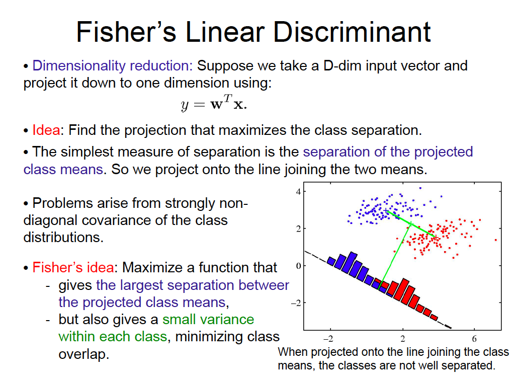
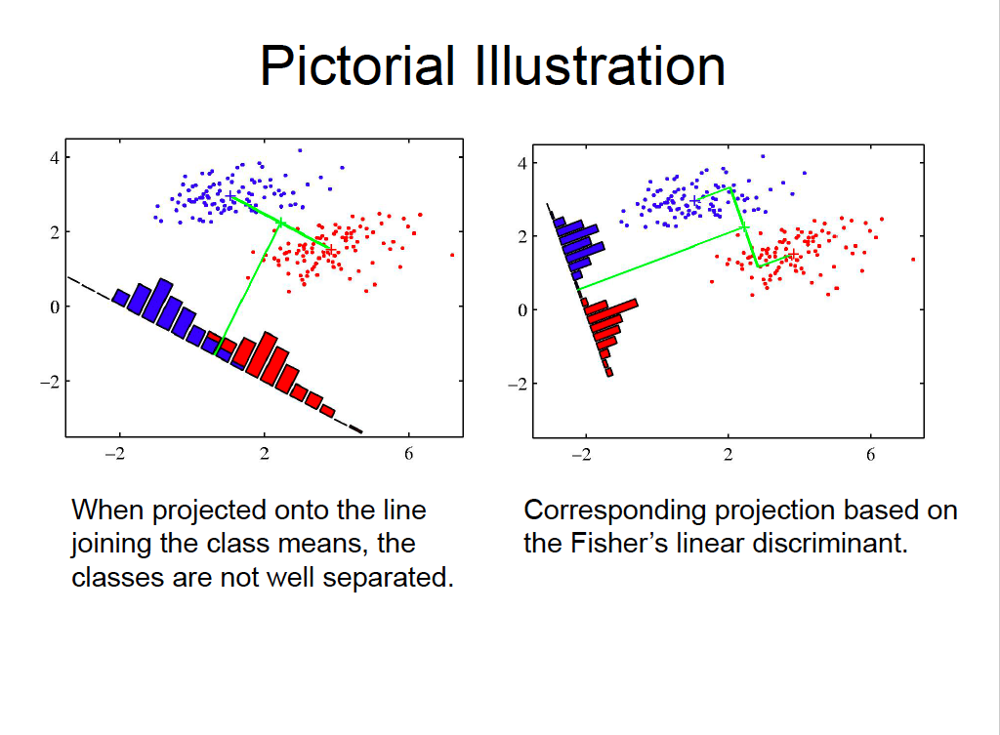
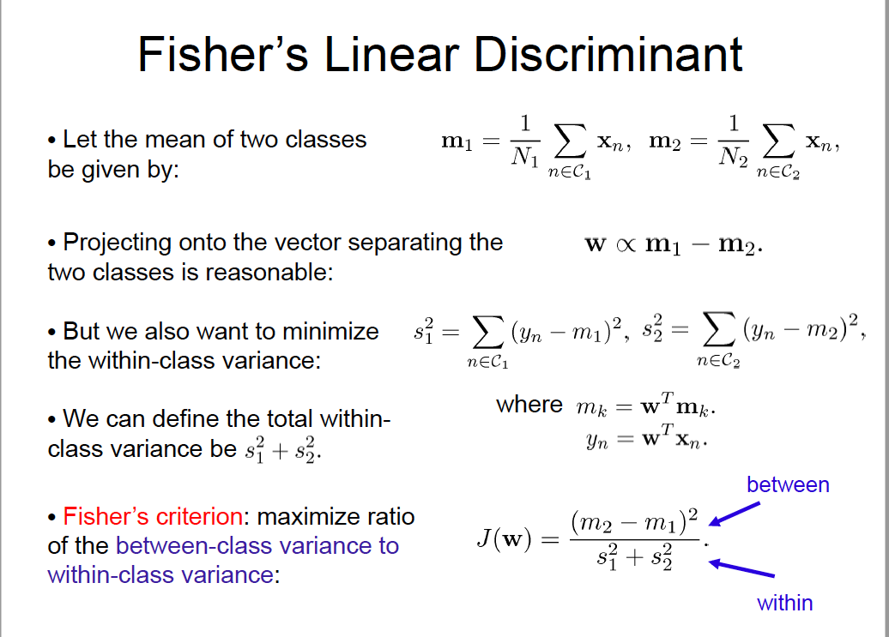
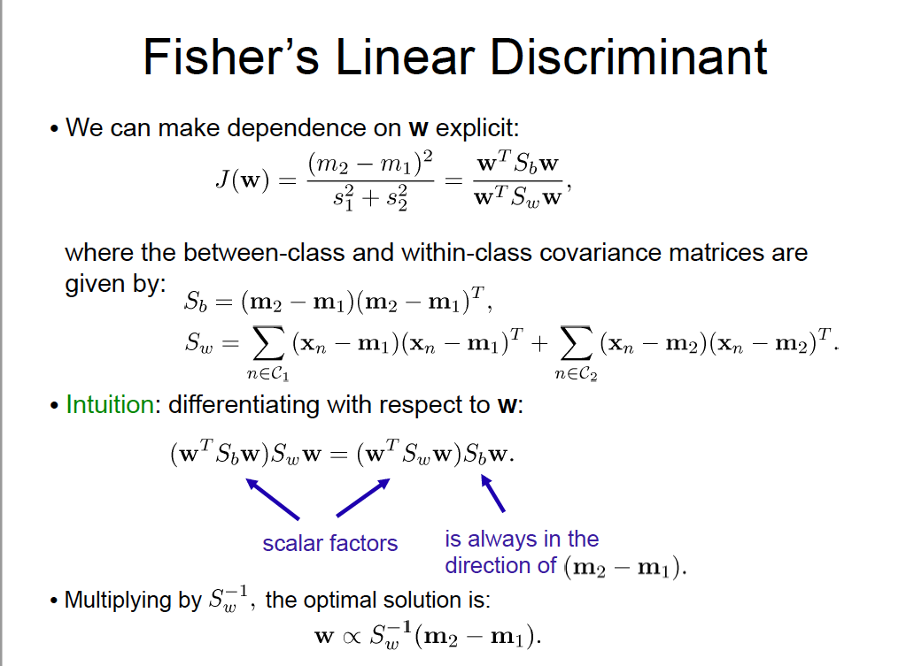
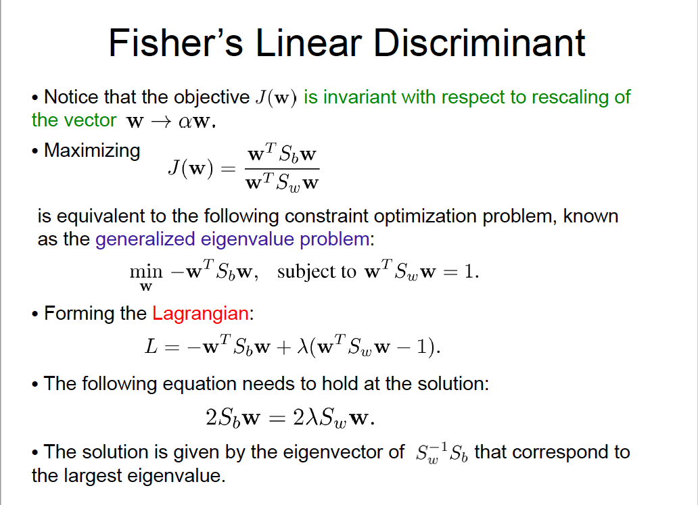
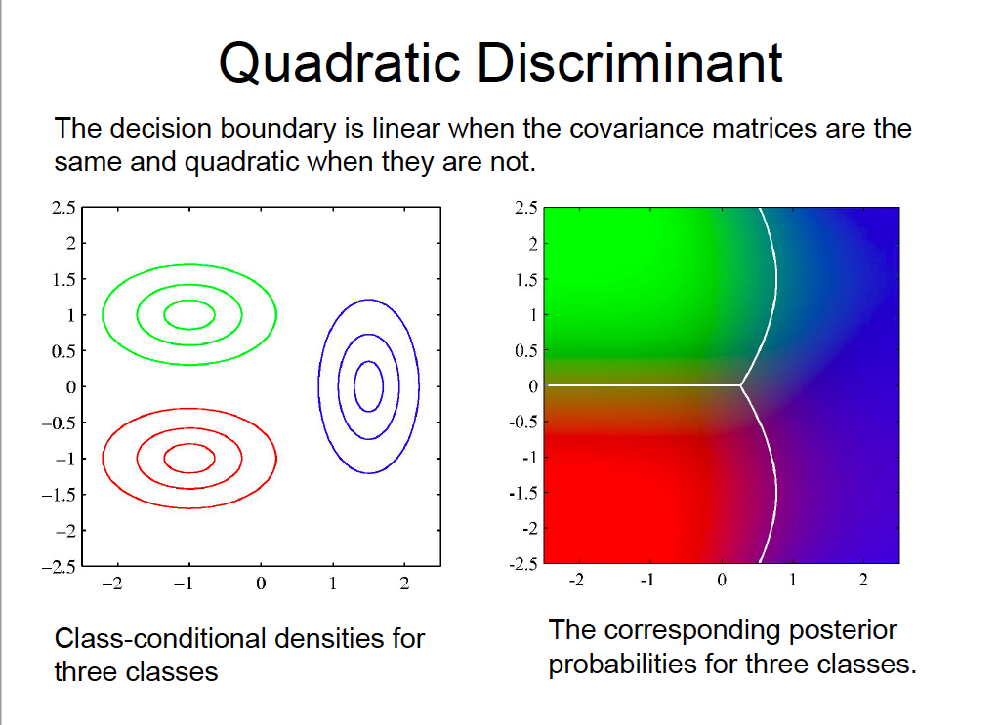 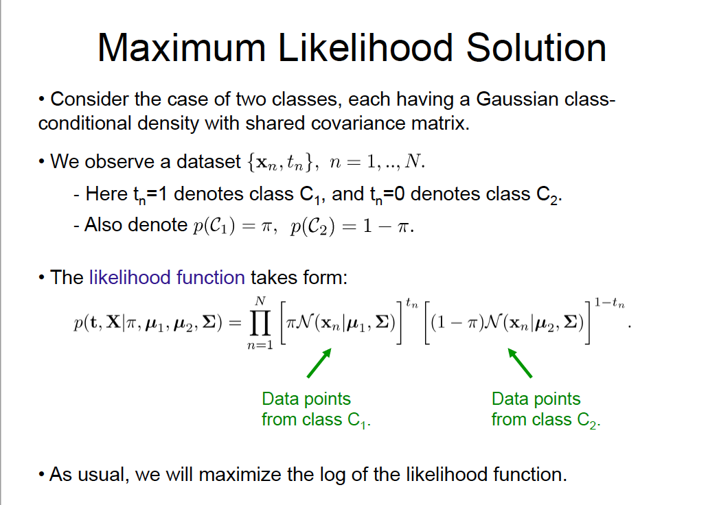 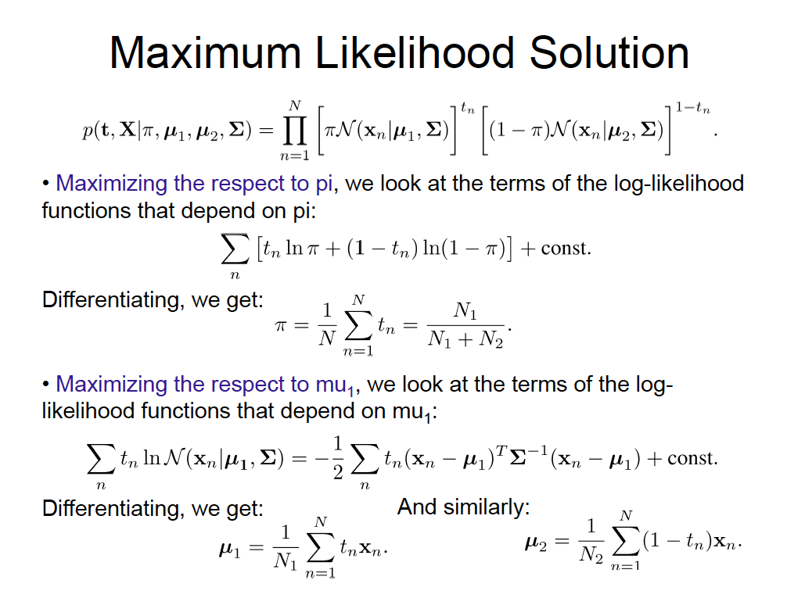 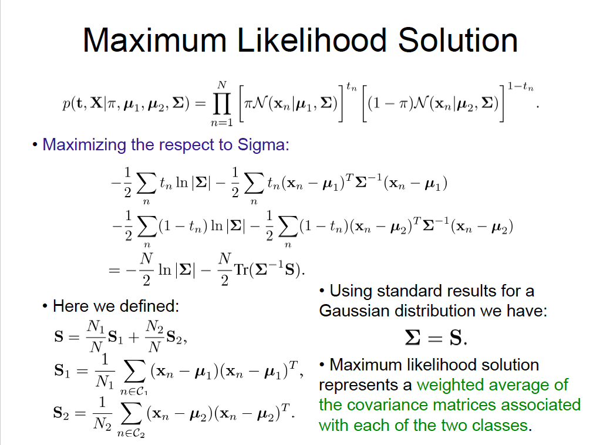 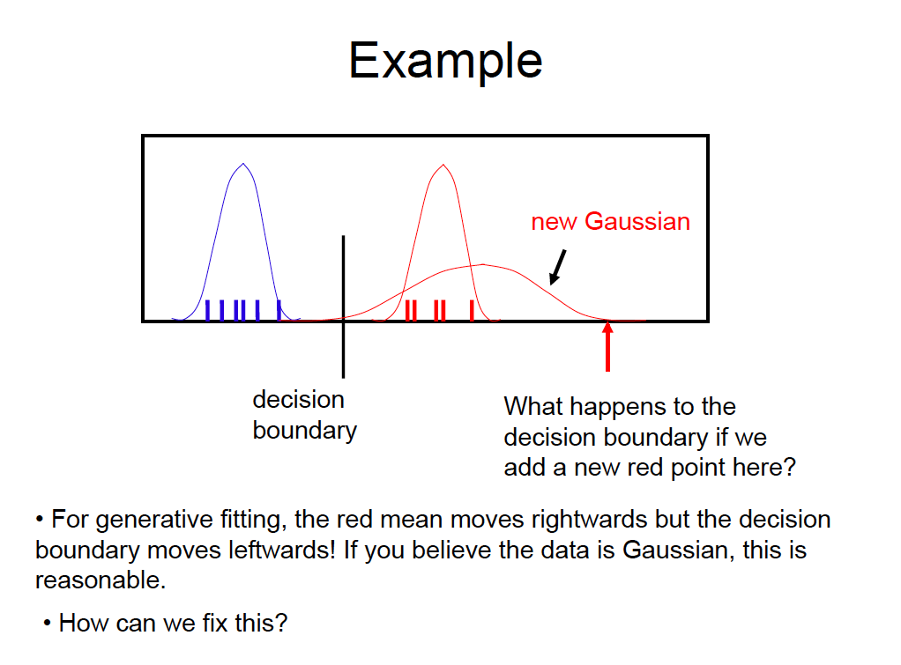